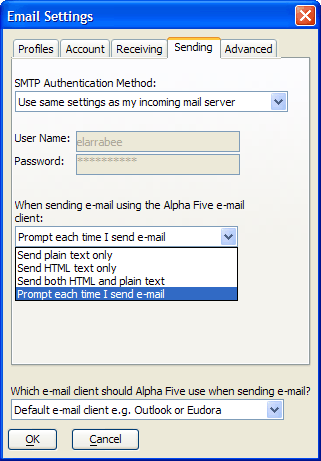

Email Profiles
Alpha Five email uses Profiles to record the various settings that you need to send and received emails. You may have multiple profiles, each with different names and characteristics. Most of the settings documented here are used by the Alpha Five internal Email Client. Alpha Five can also use third party (external) email clients such as Microsoft's Outlook and Microsoft Outlook Express, and Qualcomm Incorporated's Eudora. This is where you specify if you want to use an external email client and its name.
Email Settings
Clicking View > Settings > System > Email displays the configuration dialogs for Alpha Five email operations. You can create, modify, and delete multiple profiles. You can create profiles to use an external, third party email client, which allows Alpha Five to send, but not receive email. You can create profiles to use the internal Alpha Five email client, in which case your application can both send and receive email. When you send email, you can specify which profile to use.
You can specify the name of the inbox, and outbox for each email profile. The inbox and outbox are Alpha Five tables.
For each profile you can also specify an alias. People who receive email sent by Alpha Five will see the alias in the "From" field rather than your email address. Of course, when they reply to a message sent by you from Alpha Five, their reply will be sent to your email address, and not to your alias. For example, assume that a user's email address is "jhb231@xyz.com". If you specified an alias of "John Smith", then recipients of email sent from Alpha Five will see the email as being from "John Smith" and not "jhb231@xyz.com".
You may also display the Email Settings dialog
box by clicking Tools > Email > Send Email...
and clicking the  icon in the Send Email
dialog box.
icon in the Send Email
dialog box.
Profile Settings
To add a profile, click
 Add Profile to add a new
profile with the default name "
Add Profile to add a new
profile with the default name "". Change a profile's name by selecting it from the list and entering a new name in the Profile Name field.
To remove a profile, select it from the list box and click
 Remove
Profile.
Remove
Profile.To verify the configuration of a profile, click Test.
Select which email client to use from the drop-down list box at the bottom of the dialog box. The two possible choices are:
"Alpha Five built-in email client"
"Default email client e.g. Outlook or Eudora"
Account Settings
Enter the URLs of your Incoming Mail (POP) and Outgoing Mail (SMTP) servers. The information will be available from your ISP or MIS department.
Enter Your Name as you would like it to appear on a mail recipient.
Enter Your Email Address.
Enter your User Name and Password as defined by your email client.

Receiving Settings
Optionally check Delete if you want to delete your mail from the server after retrieving it.
Indicate the maximum number of email messages to receive at one time. -1 Indicates that you wish to retrieve all messages.
If you have changed the location of the e_email_inbox.dbf inbox, enter its new location in the Inbox field.
Optionally, redefine the name and location of the attachments folder in the Attachments field.
Sending Settings
Choose which SMTP authentication method to use. The appropriate choice will be determined by your ISP or MIS department.
"The outgoing server does NOT require authentication"
"Use same settings as my incoming mail server"
"Logon using the settings below"
"Logon to incoming mail server before sending mail"
If you selected "Logon using the settings below" in step 1, enter your User Name and Password.
If you have changed the location of the e_email_outbox.dbf inbox, enter its new location in the Outbox field.
Specify how you would like to format your email messages. The possible choices are:
"Send plain text only"
"Send formatted text only" - HTML
"Send both formatted and plain text"
"Prompt each time I send email"

Advanced Settings
Optionally add a value to the X-mailer field. This will identify your mail system to recipients.
Specify the SMTP and POP ports that your email server uses. This information will be available from your ISP or MIS department.
The Network Timeout setting controls how long Alpha Five will wait for a server before it drops the connection. If a user is having trouble or intermittent trouble connecting to a mail server, increasing this number may help.
Indicate how often (in minutes) you want to check for new mail in the Auto-check interval field.
Clear the check box if you do not want messages to be automatically marked as read when you select them in the email reader.
See Also
Supported By
Alpha Five Version 5 and Above